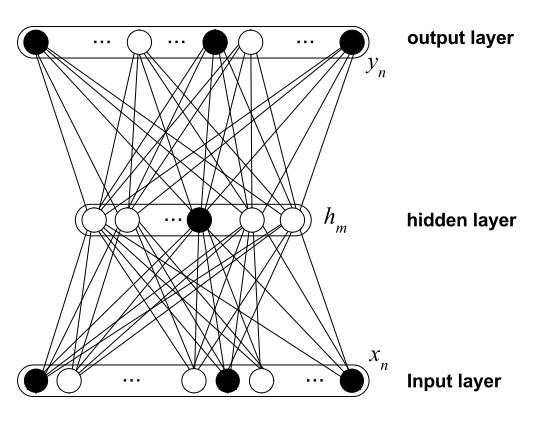
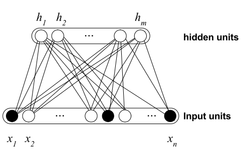

Deep Generative Semantic Grounding
Davide Nunes
What are we talking about?
Defining meaning
Symbol grounding through representation learning
Techniques from computational semantics
Deep learning and neural networks
Generative probabilistic models
Hiperdimensional computing and random projections
Ultimate Goal
To enable machines to understand the world.
The hitchicker's guide to meaning
Ontology
Ontology In Computer Science
Keystone of the Semantic Web
Formal definition of names, classes, properties, and relationships between entities in a given domain.
Problems with Formal Ontology
No motivation nor reward to adopt them
They require ontology engineering skills
Merging ontologies requires consensus
They describe very little about the world
Grounded on humans, not on actual data
Philosophy of Meaning
Signs : Signifier and Signified
(De Saussure 1916)
- The nature of language is not in its origin (etymology) but in its use;
- Sign = Signifier + Signified: the signified is a "concept" while the signifier is a stimuli;
- Arbitrary relationship between signifier and signified (a cat would be a cat by any other name);
- Language is a system of differences: what matters is the unique identity among other signs.
"Speech has both an individual and a social side, and we cannot conceive of one without the other" — Ferdinand De Saussure
Systemic Sign Relationships
Defining Meaning
Some definitions of Meaning
- What is meant by a word, text, concept, or action.
- The non-linguistic cultural correlate, reference, or denotation of a linguistic form;
- In communication: what the source expresses to the receiver, and what is inferred from the current context.
- My
definition:
The meaning of a sign is its instantiation in terms of neural activity patterns in response to the stimuli that constitutes this sign, along with the state of the world that makes up its context.
Why is the problem of meaning important?
- Meaning is at the heart of the grounding problem;
- Meaning and grounding are not the problem but the solution to a problem;
- A solution that can be instantiated by representation learning;
- Better speech recognition, information retrieval, search, linking multiple modalities;
- If an Artificial Intelligence agent "understands" the world, it can act on it.
Computational Semantics
Distributional Semantics
- Distributional Hypothesis: words that occur in the same context tend to have similar meanings (Harris 1954);
- Bag-of-Words (BoW): count co-occurrences with other words or documents;
- Co-occurrence vectors as feature vectors.
Counting co-occurrences
he curtains open and the moon shining in on the barelyars and the cold , close moon " . And neither of the w
rough the night with the moon shining so brightly , it
made in the light of the moon . It all boils down , wr
surely under a crescent moon , thrilled by ice-white
sun , the seasons of the moon ? Home , alone , Jay pla
m is dazzling snow , the moon has risen full and cold
un and the temple of the moon , driving out of the hug
in the dark and now the moon rises , full and amber a
bird on the shape of the moon over the trees in front
Counting Co-occurrences
Geometry of Meaning
$$ similarity(x,y) = cos(\theta) = \frac{x \cdot y}{\lVert x \rVert \lVert y \rVert} $$
Latent Semantic Analysis (LSA)
(Deerwester 1990)
- What about words with multiple meanings and synonyms?
- We need representations that capture the latent structure in the data;
- LSA uses Singular Value Decomposition (SVD) to find the linear subspaces that explain the variance in the data.
Problems with LSA
Assumption that latent structure in text can be captured by linear convex combinations of linearly independent vectors
Difficult to integrate new data (no on-line learning)
No extrapolation for missing data (no smoothing)
System Overview
Language Modelling
Language Modelling
- The goal of statistical language modelling is to learn the joint probability function of sequences of words in language.
- Taking advantage of word order reduces the complexity of language modelling: \(P(w^{t}|w^{t-1},w^{t-2},\ldots,w^{t-n})\\\)
- Closer words in the word sequence are statistically more dependent
Language Modelling with Neural Networks
(Bengio 2003)
- Corpus log likelihood: $$\frac{1}{T} \sum_t \text{log} f(w_t,w_{t-1}, w_{t-2},\dots,w_{t-n+1}; \theta) + R(\theta) $$
1-of-V Encoding
Encoding Text for Neural Networks
- + Smoothing for free: distributed representations deal with missing data implicitly
- + End-to-End learning: inner representations are created for a task
- - How to deal with unknown vocabulary? (On-line learning)
- - How to encode other types of patterns?
- - Huge number of parameters: how do we scale it?
Random Indexing
High-dimensional Random Representations
On Random Projections
Johnson-Lindenstrauss Lemma
- For any \(0 <
\varepsilon < \frac{1}{2}\\\) and \(x_1, \dots, x_n \in
\mathbb{R}^d\\\), there is an \(f: \mathbb{R}^d \rightarrow
\mathbb{R}^k\\\) for \(k = O(\varepsilon^{-2}\log n) \\\) such that
$$ \forall i,j \\ (1-\varepsilon) \| x_i - x_j \|^2 \le \\ \| f(x_i)-f(x_j)\|^2 \\ \le (1+\varepsilon)\|x_i - x_j\|^2 $$
- A random projection can transform set of points in a high-dimensional space into a space of much lower dimension in such a way that distances between the points are nearly preserved.
Random Indexing
(Kanerva 2000)
- Uses sparse ternary entries (+1 and -1) the distortion of the inner products created by the random mapping is zero on average.
- $$ r_{ij} = \left\{ \begin{array}{rl} +1 & \mbox{with probability } s/2 \\ 0 & \mbox{with probability } 1 - s \hspace{1em} \\ -1 & \mbox{with probability } s/2 \end{array} \right. $$
- We can encode an arbitrary number of discrete symbols and patterns incrementally
Random Indexing Example

Deep Learning
Deep Learning
- Learn multiple levels of representation of increasing abstraction
- Neural networks with multiple layers are hard to train: gradient vanishing/explosion
- Breakthroughs:
- Unsupervised layer-wise pre-training with supervised fine-tuning
- New parameter initialisation techniques that break symmetry
- Better regularisation methods
Auto-Encoder
Deep Auto-Encoders
Denoising Auto-Encoders
- Corrupt the input vector \(x\\\) into \( \tilde{x} \\\) (e.g. with Gaussian noise)
- Train the auto-encoder to reconstruct \( x \\\)
- To sample from this model iterate between corruption and reconstruction
Denoising Auto-Encoders
Probabilistic Interpretation
Road Map
Semantic Grounding
Representation End-to-End Learning
- Learn representations for text from large unlabelled corpora
- Corpora from the Web: huge but messy resource
- Representations learned can be used for grounding
- Each possible task also provides implicit domain knowledge
Tools and Resources
- Corpora:
- WaCky Corpus: Web-Crawled Corpora with 2 billion words
- Twitter Posts: containing samples for target words
- Reddit Comments: 1 TB of publicly available comments from reddit since 2007
- Wikipedia Dumps: latest Wikipedia dumps with more than 3 billion words
- Tensor Flow: open source library for numerical computation using data flow graphs
Work Plan Core Tasks
Future Work
Challenges in Research and Engineering
- Multi-modal representation learning
- Decentralised emergent representations (Multi-agent System)
- Other domains: modelling music, DNA sequences, etc.
References
- Bengio, Y.; Ducharme, R.; Vincent, P. & Janvin, C. (2003) A neural probabilistic language model, The Journal of Machine Learning Research, 3, 1137-1155
- Bengio, Yoshua, et al. (2013) Generalized de-noising auto-encoders as generative models, Advances in Neural Information Processing Systems.
- Berners-Lee, T. Fischetti, M. (1999) Weaving the Web: The Original Design and Ultimate Destiny of the World Wide Web by Its Inventor, Harper San Francisco.
- Deerwester, S. C.; Dumais, S. T.; Landauer, T. K.; Furnas, G. W. & Harshman, R. A. (1990) Indexing by latent semantic analysis, Journal of the American Society for Information Science, 41, 391-407
- De Saussure, F. (1916) Nature of the linguistic sign, Course in general linguistics, 65-70
- Frege, G. (1948) Sense and reference The philosophical review, JSTOR, 57, 209-230
- Harris, Z. S. (1954) Distributional structure , Word
- Hinton, G. & Salakhutdinov, R. (2006) Reducing the Dimensionality of Data with Neural Networks, Science, 313, 504-507
- Malcolm, N. (1966) Wittgenstein’s philosophical investigations, Springer
Thank you
Extra Material
Singular Value Decomposition
Truncated SVD


Random Projections
Distortion
PCA vs Deep Auto-Encoders
(Hinton 2006)
Restricted Boltzmann Machines
- $$ P(x_i=1|h) = f\left( \sum_j w_{ij}h_j + b_i \right)$$
- $$ P(h_j=1|x) = f \left( \sum_i w_{ij}x_i + c_j \right) $$